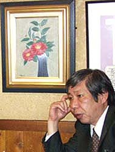

ある「三池のこどもたち」の死

「覚えたてのパソコンで故郷情報を何気なく探していたらこの欄がありました。私は、鶯町と
大島社宅に住み、緑ヶ丘小、二中の出身です。今も炭鉱社宅での生活が懐かしい1人です。あなたがいたという若葉町社
宅にもたくさん友達がいました。しかし、社宅がなくなってみんなが散り散り。クラス会も開けません。このサイトに
故郷の香りがしました」。
ある時、千葉県の○○市民新聞編集長だった河口さんは私のホームページ「異風者からの通信」を記事にしてくれた。
何度かメールのやりとりをしているうち、私の次兄と故郷の荒尾市立緑ヶ丘小学校で同じクラスであったこともわかる。
なにがなんでも河口さんと会ってみたいと思った。私は昨年3月千葉県の河口さんを訪ねた。自宅の書斎には三池炭鉱に
関する書物が多く並べられてあった。河口さんもまたふるさと三池にこだわるひとりだったことを知る。
10月10日頃だったか、河口さんがめずらしく私に電話をくれた。「今入院している。私の命もそう長くはないらしい」
という内容だった。その声が少し苦しげに聞こえた。その時私は「見舞いに行きますから」と答えた。
私はまだ河口さんとの約束を果たしていない。こんなに早く逝ってしまうとは思ってもみなかった。いまそんな
自分が苦しい。
（2005年11月14日 まえかわ）
|